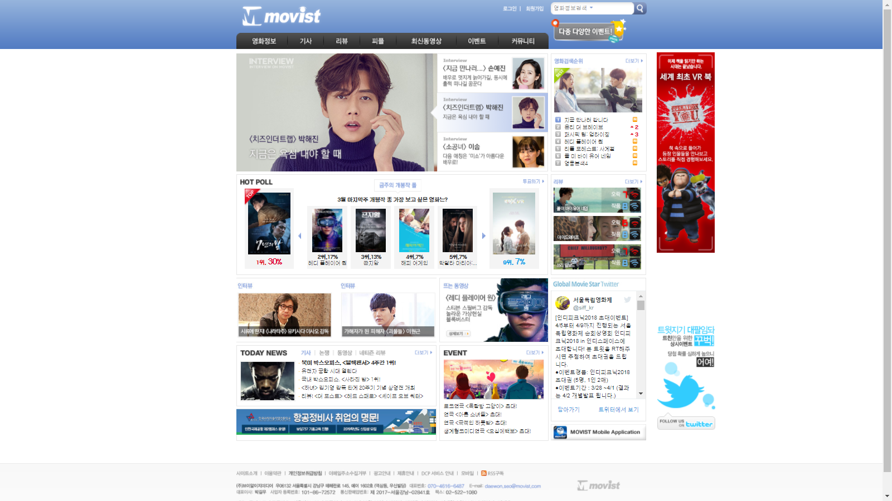
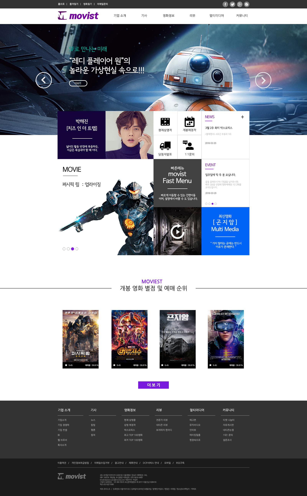
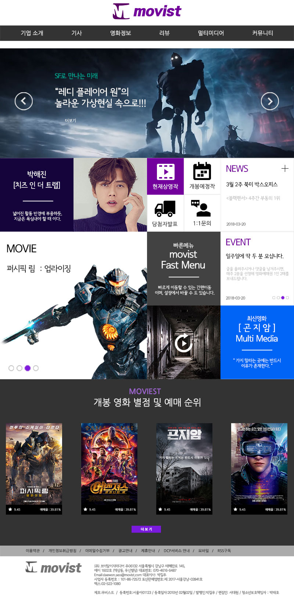
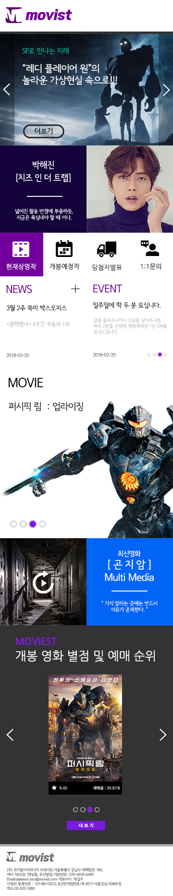
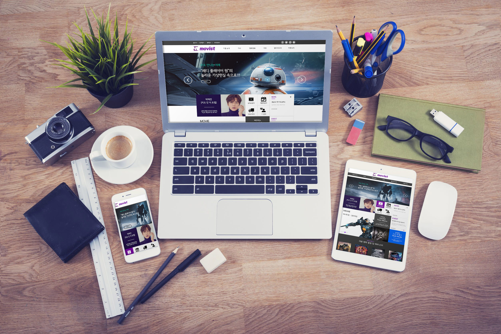

Redesign
무비스트라는 기존의 홈페이지를 리디자인 하였으며, 메뉴는 눈에 가장 띄도록 하얀 배경에 놓았으며, 사이트 자체가 심플한 느낌을 살리기 위해 카드형 레이아웃을 사용하였습니다. 기존의 페이지는 많은 내용을 함축적으로 메인 페이지에 넣었지만, 사이트 자체가 혼잡하여, 리디자인을 하면서 심플한 느낌을 살리기 위해 노력하였습니다. 웹, 태블릿, 모바일 버전은 카드형 레이아웃을 사용하였기에 보다 편한 레이아웃의 이동을 보여줄 수 있었습니다.
< Redesign site 바로가기 >

무비스트 (before)

무비스트 (after_web)

무비스트 (after_tablet)

무비스트 (after_mobile)
